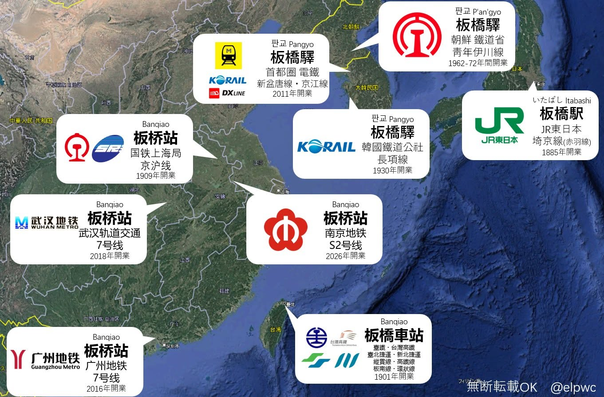

Four Places, One Name: 板橋
- Tokyo has a district called 板橋, pronounced Itabashi.
- The same characters appear in Pangyo, Korea, and Banqiao in both Nanjing and New Taipei.
- All four names tell stories of wooden bridges. But are they really just coincidences?

Four places, one name
In Tokyo, Japan:
板橋
Itabashi
In Seongnam, Korea:
板橋 / 판교
Pangyo
In Nanjing:
板桥 / 板橋
Bǎnqiáo
In New Taipei:
板橋
Bǎnqiáo (Mandarin)
Pang-kiô (Taiwanese Hokkien)
Exactly the same two characters.
板 means wooden plank.
橋 means bridge.
Together, "Plank Bridge."
But how did four places end up with the same name?
Four bridges, four histories
Tokyo: Itabashi
A wooden bridge over the Shakujii River (石神井川) is traditionally said to have given the area its name.
The place name appears in The Tale of the Heike (平家物語), a medieval Japanese war tale.
Centuries later, a humble bridge's name survives as an entire district of Tokyo.
Seongnam: Pangyo
Today, Pangyo is Korea's Silicon Valley.
But its older name was:
널다리 / 너더리
Neoldari / Neodeori
In Korean, neol means "plank," and dari means "bridge."
So neoldari literally means "plank bridge."
But there is a twist.
Some scholars suggest that neodeori may originally have meant "wide field," related to Korean neolp- (넓-, wide) and deul (들, field).
Perhaps the name was later reinterpreted as "plank bridge."
The original meaning remains uncertain.
Yet the Chinese characters became 板橋.
Nanjing: Banqiao
Local accounts tell of a crossing made with wooden planks laid over boats or rafts.
In 1688, the bridge was reportedly rebuilt in stone.
The wooden bridge disappeared.
But the name stayed.
New Taipei: Banqiao
Here, the story takes an unexpected turn.
The original name was:
枋橋
Pang-kiô
"Plank bridge."
In 1920, during Japanese administration, the written name changed from 枋橋 to 板橋.
The meaning remained.
But the characters now matched those used in the other three places.
Was Tokyo's Itabashi the inspiration?
We don't know.
But this time, the matching characters were the result of a documented renaming.
Coincidence or connection?
Four places.
Four different histories.
One written name:
板橋
In Tokyo, a medieval bridge became a district.
In Korea, a native name may have acquired a new interpretation.
In Nanjing, a wooden crossing became stone.
And in New Taipei, the written characters changed while the meaning survived.
There is no evidence that all four names came from one original place.
Yet they arrived at exactly the same two characters.
Across centuries, rivers were crossed, bridges rebuilt, and villages transformed into modern cities.
The original bridges may have vanished.
But their names are still here.
And perhaps that is what makes place names so fascinating.
A bridge can disappear. A name can cross centuries.
What other ordinary place names across East Asia might hide extraordinary stories?
Sources
- Map of stations named 板橋 by @elpwc (hero image): https://x.com/elpwc/status/2047295692507656665